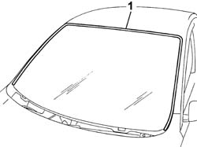
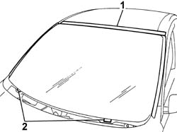
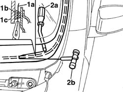
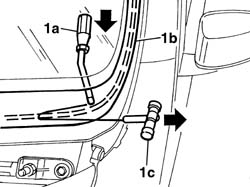
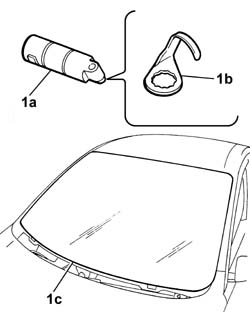
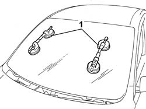
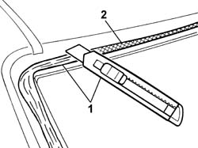
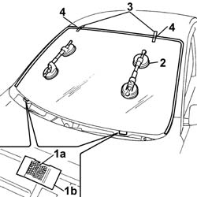
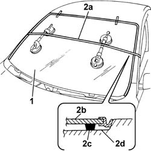

7035A18 windscreen glass r r including cleaning of housing
- Path
- Procedures > 70 FITTINGS > 7035 BODYSHELL WINDOWS > 7035A windscreen > 7035A18 windscreen glass r r including cleaning of housing
- Kind
- repair procedure (removal / refitting; the operation number is the code)
- Applies to
- all engines; all production periods
- Interactive page
- https://sloeber94.github.io/elrnDB-fPnd/en/#/2753167
Applies to: all engines; all production periods
 Removing
Removing
 Refitting
RefittingDisconnect the battery negative terminal.
5050B34 windscreen wiper arm/s complete with blade - r+r
7210E22 R.R. WINDSCREEN BASE TRIM
7065C68 rear view mirror - r+r
1. Release the perimeter seal and remove it.

Applies to: all engines; all production periods
1. Position a strip of suitable adhesive tape to protect the bodywork along the side and top of the windscreen.
2. Completely lower the windscreen retaining pegs.

Applies to: all engines; all production periods
The bead of sealant for the windscreen can be cut using either harmonic wire or the vibrating knife; both methods are described below.
To cut the bead using harmonic wire, proceed as follows.
1. Cut a section of harmonic wire about 50 cm long, then, using pliers, insert one end (1a) of the harmonic wire through the bead of sealant (1b) which secures the windscreen (1c).
2. Fix one end of the harmonic wire to the special retaining tool (2a), inside the vehicle, and the other end to the traction handle (2b) outside the vehicle.

Applies to: all engines; all production periods
1. The operator inside the vehicle should keep the end of the tool (1a) pressed against the bead of sealant (1b) about 30 cm away from the point where the wire passes, whilst the other operator, outside the vehicle, should pull the handle (1c), following the surround of the windscreen.
Repeat the operation in sections of about 30 cm, until the whole of the bead of sealant is cut.

Applies to: all engines; all production periods
To cut the bead using the vibrating knife, proceed as described below.
1. Use the vibrating knife (1a) with blade (1b) and cut the bead of sealant (1c).

Applies to: all engines; all production periods
1. Fit the suction handles to the windscreen and, with the assistance of a second operator, remove the windscreen and rest it on a supporting stand.

Applies to: all engines; all production periods
Refitting
Removing1. Using a suitable tool, cut and smooth the bead of sealant in the windscreen frame, leaving a thickness of between 0.25 and 1 mm, taking care not to scratch the paintwork.
2. Clean the windscreen seating carefully with compressed air and degrease thoroughly using heptane.
If glueing takes place 60 minutes after cutting and smoothing the bead of sealant, treat the sealant surface with the specific activator and wait 15 minutes before fixing the rearscreen.
 | Type | Component | Name | Qty. |
|---|---|---|---|---|
- | Sealant | WINDSCREEN GLASS | PRIMER | - |
If necessary touch up the paintwork.

Applies to: all engines; all production periods
Check the condition of the windscreen perimeter seal and, if necessary, replace it.
Fit the perimeter seal on the windscreen.
If the same windscreen is being reused, carry out the following procedure:
7035A50 windscreen glass clean edges and sand small abrasions
If this is not the case, use a new windscreen and proceed as described below.
1. Lift the pins (1a) for the retainers (1b).
Remove the adhesive tape positioned previously on the edges of the bodywork.
2. Test fit to locate the window perfectly.
3. Once the window is centred, mark the reciprocal positions of the window and seating, with strips of adhesive tape.
4. Cut the strips of adhesive tape and remove the window.

Applies to: all engines; all production periods
Use an air gun to extrude a bead of sealant as evenly as possible along the perimeter of the windscreen.
| Type | Component | Name | Qty. |
|---|---|---|---|---|
- | Sealant | WINDSCREEN GLASS | 71711976 | - |
1. With the assistance of a second operator, fit the rear window in its seating immediately after applying the sealant and bed it in place.
2. Fit the belt (2a) as shown in the figure and tension it so as to apply even pressure over the entire windscreen, in order to ensure a perfect match between window (2b), sealant (2c) and windscreen frame (2d).

Applies to: all engines; all production periods
7065C68 rear view mirror - r+r
7210E22 R.R. WINDSCREEN BASE TRIM
5050B34 windscreen wiper arm/s complete with blade - r+r
Connect the battery negative terminal.
Topics linked from this page (4)
- 5050B34 windscreen wiper arm/s complete with blade - r+r
- 7035A50 windscreen glass clean edges and sand small abrasions
- 7065C68 rear view mirror - r+r
- 7210E22 R.R. WINDSCREEN BASE TRIM